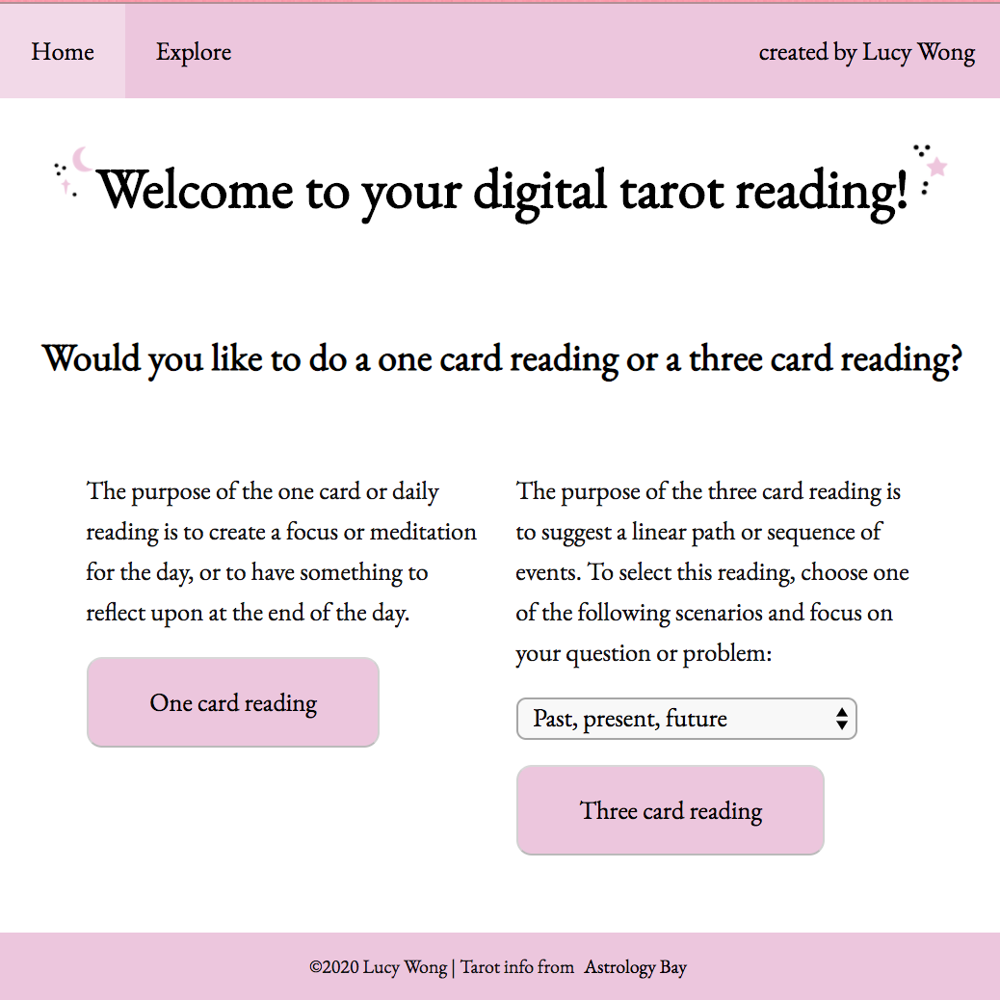
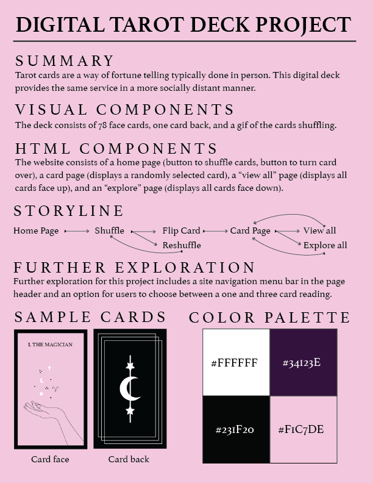
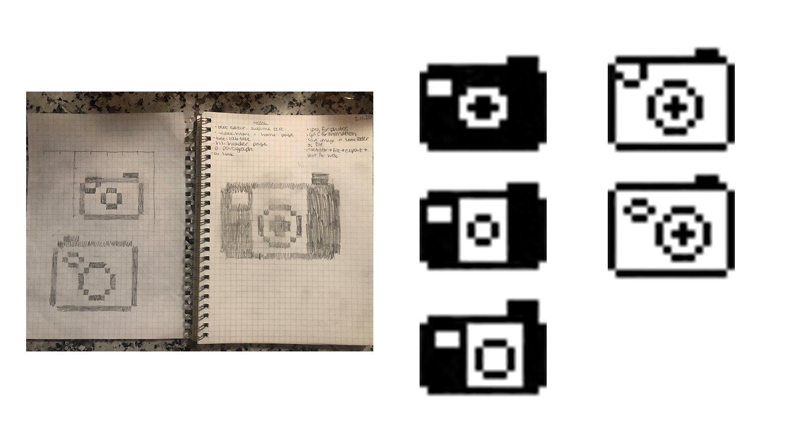
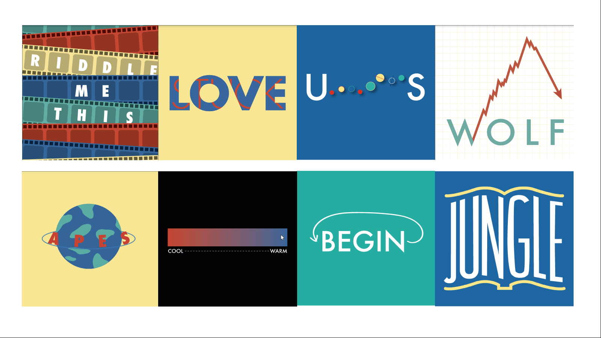

ARTS 412
Graphic Design Software II
Lucy Wong
Lucy is currently a senior at Binghamton University studying Business Administration with a concentration in marketing and a minor in Graphic Design. She enjoys travel, skydiving, and ricotta cheese.
Project 3: Digital Tarot Website

The tarot cards website features a menu across the top, and the home page offers the viewer the choice of either a one card or three card reading. Upon choosing, the viewer can shuffle the cards to their liking and then click to reveal the card they've chosen. The interpretation of the reading is left up to the viewer. The site also features an explore page, where viewers can browse all 78 cards, hovering over the art to learn the meaning of each card. The website works for both desktop and mobile browsers. It was a bit of a challenge to teach myself all the Javascript required for this project, but I'm very pleased with the end results.
Project 3: Digital Tarot Website

Tarot card reading is a very intimate, hands on activity, but this type of interaction doesn't work well in a time of social isolation. This digital tarot deck makes it so that readings, like many other in-person activities, can be moved online. Each of the 78 cards in the deck features a unique design and the site offers a one card or three card reading.
Project 2: Bitmap Icon

Here are three variations of a camera icon, an image that could have been included in the original version of Photoshop but is also currently relevant. The cover image is the final version of the icon.
Project 1: Riddle Typography Book

This was a portion of what the final riddle book looked like. All the riddles fell under the theme of movies, and the book used a consistent color palette and font. The full book can be viewed by clicking here.

Project 1: Riddle Typography Book

The brief for this project was to create a typographic riddle based on a movie title. Initially I didn't think that The Jungle Book would work well, but after trying a few versions I was able to come up with a look I liked.

Project 1: Riddle Typography Book

This riddle depicting the movie Monster's Inc. was ultimately removed from the book because it wasn't as cohesive as the other riddles, but I think the look of the ink splatter is captivating and graphic.